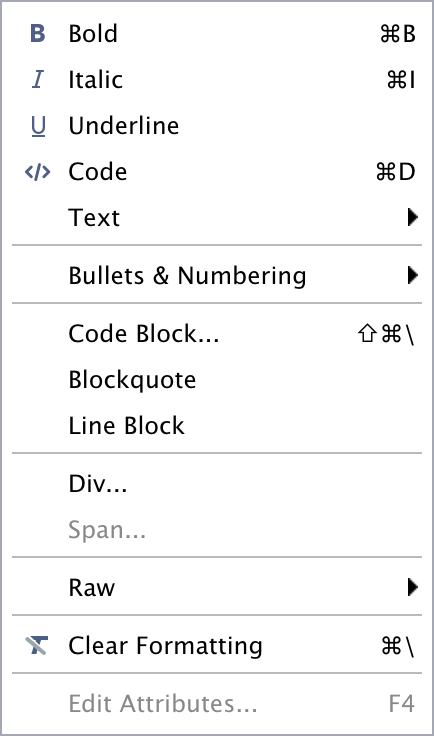
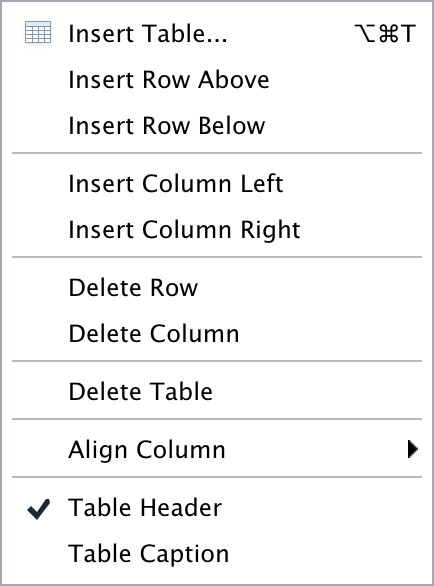

Visual Editing in RStudio
Overview
The Quarto visual editor provides a WYSIWYM editing interface for all of Pandoc markdown, including tables, citations, cross-references, footnotes, divs/spans, definition lists, attributes, raw HTML/TeX, and more. The visual editor also includes support for executing code cells and viewing their output inline:

The visual editor doesn’t attempt to abstract away or obscure the underlying markdown document. Rather, it aims to provide a highly productive writing interface for people that love markdown. You can also still use most markdown constructs (e.g., ## or bold) directly for formatting.
Switching Modes
Markdown documents can be edited in either source or visual mode. To switch into visual mode for a given document, use the Source or Visual button at the top-left of the document toolbar (or alternatively the ⌘⇧ F4 keyboard shortcut):

Note that you can switch between source and visual mode at any time (editing location and undo/redo state will be preserved when you switch).
Getting Started
The Quarto visual editor is currently available as a feature of the RStudio IDE. The visual editor will eventually also be made available in standalone form.
To get started with the visual editor, download the latest release of RStudio (v2023.03) for your platform from:
Using the Editor
Keyboard Shortcuts
There are keyboard shortcuts for all basic editing tasks. Visual mode supports both traditional keyboard shortcuts (e.g. ⌘ B for bold) as well as markdown shortcuts (using markdown syntax directly). For example, enclose **bold** text in asterisks or type ## and press space to create a second level heading. Here are some of the most commonly used shortcuts:
| Command | Keyboard Shortcut | Markdown Shortcut |
|---|---|---|
| Bold | ⌘ B | **bold** |
| Italic | ⌘ I | *italic* |
| Code | ⌘ D | `code` |
| Heading 1 | ⌥⌘ 1 | # |
| Heading 2 | ⌥⌘ 2 | ## |
| Heading 3 | ⌥⌘ 3 | ### |
| Link | ⌘ K | <href> |
| R Code Chunk | ⌥⌘ I | ```{r} |
See the editing shortcuts article for a complete list of all shortcuts.
Insert Anything
You can also use the catch-all ⌘ / shortcut to insert just about anything. Just execute the shortcut then type what you want to insert. For example:


If you are at the beginning of a line (as displayed above), you can also enter plain / to invoke the shortcut.
Editor Toolbar
The editor toolbar includes buttons for the most commonly used formatting commands:

Additional commands are available on the Format, Insert, and Table menus:
| Format | Insert | Table |
|---|---|---|
|  |  |
 |
Learning More
Check out the following articles to learn more about visual markdown editing:
Technical Writing covers features commonly used in scientific and technical writing, including citations, cross-references, footnotes, equations, embedded code, and LaTeX.
Content Editing provides more depth on visual editor support for tables, lists, pandoc attributes, CSS styles, comments, symbols/emojis, etc.
Shortcuts & Options documents the two types of shortcuts you can use with the editor: standard keyboard shortcuts and markdown shortcuts and describes various options for configuring the editor.
Markdown Output describes how the visual editor parses and writes markdown and describes various ways you can customize this.